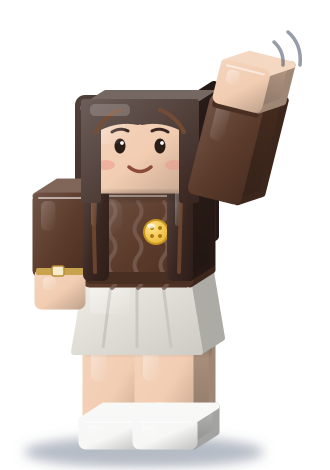
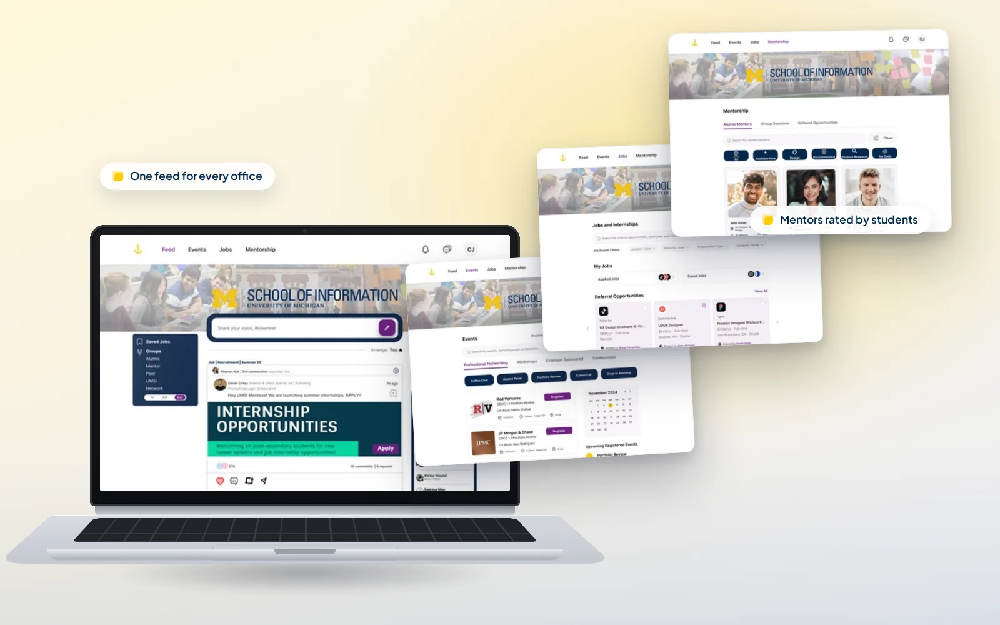
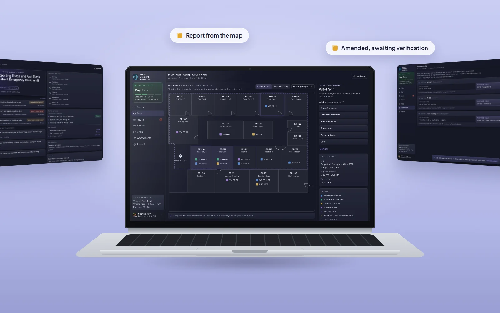

CASE 01
TEA: Text Entry Augmentation
UX Lead
26% faster translation
Beyond the button: One mistranslated term can change what a researcher believes. TEA makes AI show its work in any language.

Product designer and UX researcher
with tech-policy & PM experience.
CASE 01
UX Lead
26% faster translation
Beyond the button: One mistranslated term can change what a researcher believes. TEA makes AI show its work in any language.

CASE 02
UX researcher and designer
75% said mentorship improved their networking
Beyond the button: A scattered career search hits students with less time and fewer connections hardest. Anchor puts the whole search on one page.

CASE 03
Product designer, solo concept
11 to 1 places to check, carried in one companion
Beyond the button: When the record and the room disagree, the person standing there should be able to say so. Waypoint routes that correction to its owner without overwriting the audit trail.
Why Roblox
Roblox treats research as part of the product. Its creator analytics show every creator the same signals a UX researcher lives in: engagement, retention, and how their game compares to similar ones. On safety, it goes far beyond chat verification. Since 2025 it has shipped more than 100 safety updates, built Roblox Sentinel to catch early signs of child endangerment, and open-sourced its safety tools so other platforms can use them too. Roblox stays ahead of industry standards on policy and guardrails, and it shows.
Why me
I'm more than a PM or a UX intern with a research foundation. As a PM at Epic, I learned to find the right first problem inside complex hospital systems, organize the chaos, and map an operational fix fast. As a researcher, I'm trained to understand people, their behavior, and where things break for them. At the Center for Democracy and Technology, I see the why behind design decisions and the people they affect at scale.
My Philosophy
That's why UX design was never just a button or a wireframe to me. Every interaction carries a person's trust, and it's personal. I understand a product beyond its screens: its business needs and its political and societal impact. I learned that by doing, in strenuous, fast-paced systems, and those are nuances you can't just learn at any firm.
My goal
Roblox puts all of that at platform scale. I want to be the investigator who uncovers the friction, the advocate for the players behind the data, and grow into a designer who shapes the business.